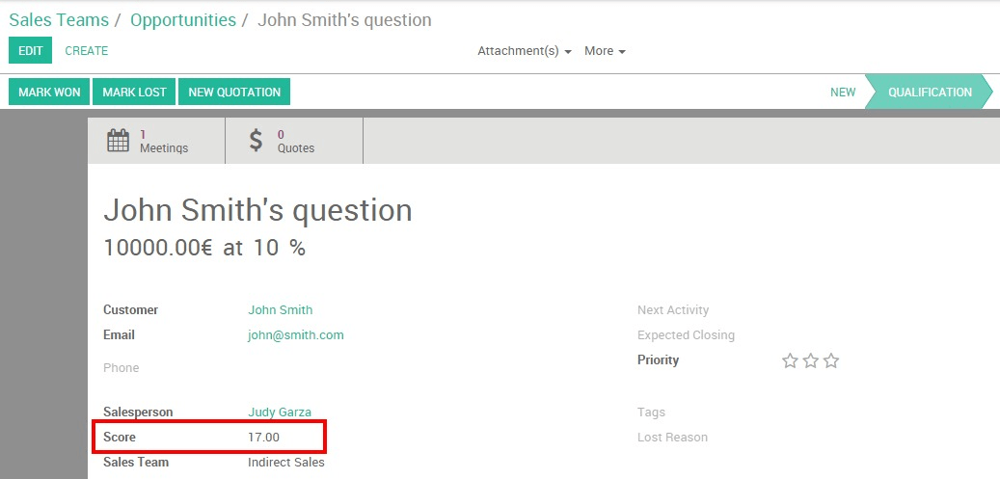

Odoo's Lead Scoring module allows you to give a score to your leads based on specific criteria - the higher the value, the more likely the prospect is “ready for sales”. Therefore, the best leads are automatically assigned to your salespeople so their pipe are not polluted with poor-quality opportunities.
Note
Lead scoring is a critical component of an effective lead management strategy. By helping your sales representative determine which leads to engage with in order of priority, you will increase their overall conversion rate and your sales team's efficiency.
Configuration
Install the Lead Scoring module
Start by installing the Lead Scoring module.
Once the module is installed, you should see a new menu

Create scoring rules
Leads scoring allows you to assign a positive or negative score to your prospects based on any demographic or behavioral criteria that you have set (country or origin, pages visited, type of industry, role, etc.). To do so you'll first need to create rules that will assign a score to a given criteria.
Tip
In order to assign the right score to your various rules, you can use these two methods:
- Establish a list of assets that your ideal customer might possess to interest your company. For example, if you run a local business in California, a prospect coming from San Francisco should have a higher score than a prospect coming from New York.
- Dig into your data to uncover characteristics shared by your closed opportunities and most important clients.
Please note that this is not an exact science, so you'll need time and feedback from your sales teams to adapt and fine tune your rules until getting the desired result.
In the Scoring Rules menu, click on Create to write your first rule.

First name your rule, then enter a value and a domain (refer on the
official python documentation
for more information). For example, if you want to assign 8 points to all the
leads coming from Belgium, you'll need to give 8 as a value and
[['country\_id',=,'Belgium']] as a domain.
Tip
Here are some criteria you can use to build a scoring rule :
- country of origin :
'country_id' - stage in the sales cycle :
'stage_id' - email address (e.g. if you want to score the professional email addresses) :
'email_from' - page visited :
'score_pageview_ids.url' - name of a marketing campaign :
'campaign_id'
After having activated your rules, Odoo will give a value to all your new incoming leads. This value can be found directly on your lead's form view.
Assign high scoring leads to your sales teams
The next step is now to automatically convert your best leads into opportunities. In order to do so, you need to decide what is the minimum score a lead should have to be handed over to a given sales team. Go to your sales dashboard and click on the More button of your desired sales team, then on Settings. Enter your value under the Minimum score field.

From the example above, the Direct Sales team will only receive
opportunities with a minimum score of 50. The prospects with a lower
score can either stay in the lead stage or be assigned to another sales
team which has set up a different minimum score.
Tip
Organize a meeting between your Marketing and Sales teams in order to align your objectives and agree on what minimum score makes a sales-ready lead.